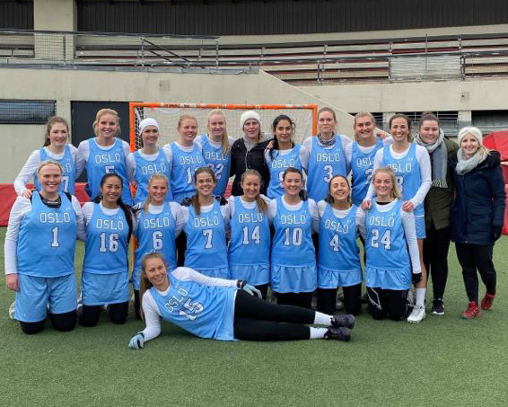

Lacrosse er en idrett med lang og stolt historie, helt tilbake til 1600-tallet.
Dens opphav var som et
spill mellom ulike indianerstammer i Nord Amerika
og idrettens seremonier er fremdeles preget av indianske
tradisjoner.
Idretten er en lagbasert ballsport som spilles med ti spillere på hvert lag,
på en bane omtrent av samme
størrelse som en vanlig fotballbane.
Det finnes også innendørs lacrosse, kalt indoor eller box lacrosse.
Spillerne er utstyrt med køller med en nettlomme i enden (la crosse)
som brukes til å fange og kaste
ballen mellom spillerne og i mål.
Taktisk minner spillet mye om ishockey, hvor du har et offensivt spill
som handler
om å sette opp spill og skaffe medspillere åpne skudd, mens keeper er beskyttet
av en
vernet sone rundt målet. For herrer er spillet er svært fysisk og det brukes derfor
beskyttelsesutstyr og
hjelm.
For kvinner er spillet noe annerledes.
Nettlommen på crossen er ikke tillatt så dyp som for gutter, dette
gjør det enklere å slå ballen ut.
Reglene for fysisk kontakt er også mye strengere og jentene bruker dermed
mindre
beskyttelsesutstyr.
Lacrosse i Norge vokser og det er i dag ca 1.000 aktive spillere
i forbundets 16 medlemsklubber. Klubbene
er i stor grad tilknyttet universitet og høyskoler,
men det er også frittstående klubber. Seriespillet
foregår i flere byer som helgeturneringer,
med kvalifisering til Norgesmesterskapet som er i juni. I
tillegg er det studentmesterskap
og mindre turneringer. Forbundet organiserer landslag både for herrer og
kvinner,
med deltagelse i EM og VM, med gode resultater.